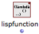
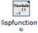
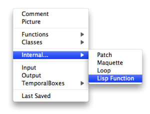
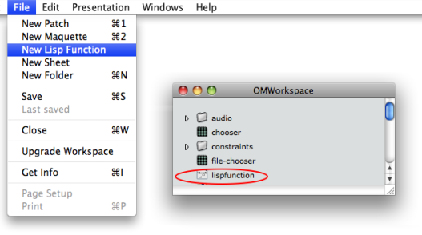
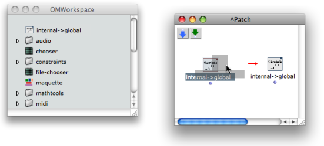
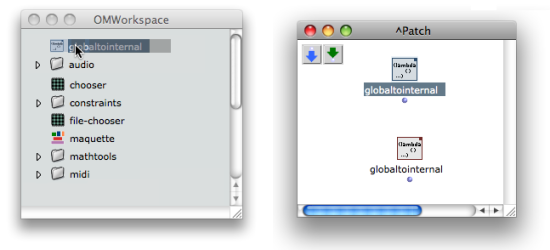
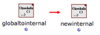
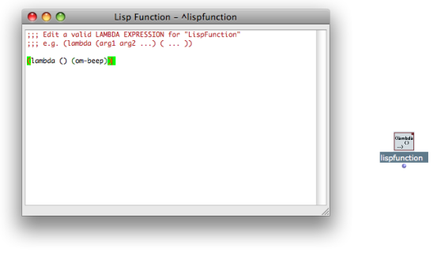
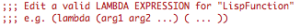
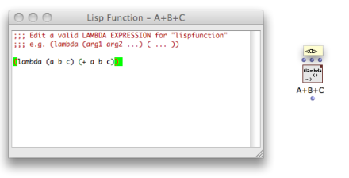

OpenMusic DocumentationHiérarchie de section : OM 6.6 User Manual > Lisp Programming > Lisp Function Boxes
OpenMusic DocumentationHiérarchie de section : OM 6.6 User Manual > Lisp Programming > Lisp Function Boxes
Navigation : page précédente | page suivante
Attention, votre navigateur ne supporte pas le javascript ou celui-ci à été désactivé. Certaines fonctionnalités de ce guide sont restreintes.
Lisp Function Boxes
Writing a function or procedure in Lisp can be more convenient that the creation of a visual program. Lisp Function boxes are abstractions defined in Lisp textually. Like visual abstractions
they can be internal to a patch  – red
or defined globally in the environment and workspace –blue.
Creating Lisp Functions
Internal Lisp Function (Red)

|
To create a new Lisp function in a patch you can either
A new box will appear, with one output. It doesn't have a default input. This box behaves externally as a red patch box — internal abstraction —. |
Internal Abstractions
Global Lisp Function (Blue)

To create a global Lisp Function like a patch or a maquette, use the File / New Function menu item in the workspace or folder windows.
The new Lisp function created here can be used in several locations, just like a blue patch. All its representations will refer to this same master function.
The box created will (externally) behave as a blue patch box.
Global Abstraction
Lisp Functions Conversion
Red and blue Lisp functions can also be converted with the standard patch conversion procedures.

To globalize a red lisp function, drag it to the workspace. The function will be converted automatically.
To rename the function, rename it from the workspace.

To internalize a blue lisp function, select it and press |

|
Converting Internal/Global Abstractions
Editing Lisp Functions
Lisp Function Editor

Double click a Lisp Function box to edit its contents. The window that opens is similar to a Lisp editor.
The Lisp Editor
Writing Lisp Functions
The function must be written as a lambda expression with a given number of arguments. The editor provides a default basic edition pattern showing the components of such lambda expression. |

|
What is a Lambda Expression ?
Arguments and Inputs

When the Lisp editor of the box is closed, the number of inputs is updated according to the number of arguments of the function, if arguments have been added or deleted.
Unique Output
Lisp functions can have only one output, which corresponds to the value returned by the Lambda expression.
Références :
Plan :
Navigation : page précédente | page suivante
A propos...(c) Ircam - Centre Pompidou